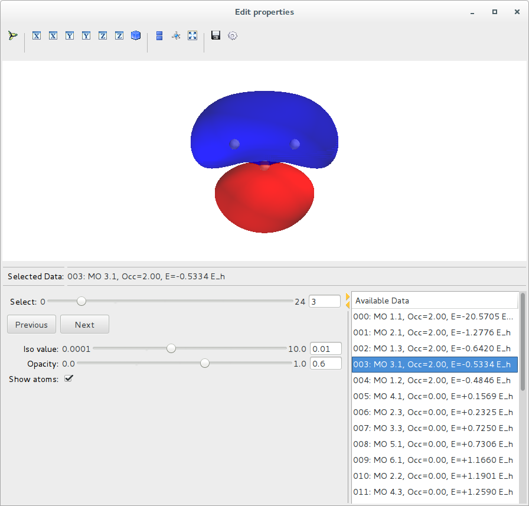

Quick Start Guide¶
This chapter shows a simple example of how to use ORBKIT. Here, we compute four molecular orbitals (HOMO-1, HOMO, LUMO, and LUMO+1) of a water molecule and we demonstrate its quick visualization with VMD and Mayavi. The execution is demonstrated within the Terminal and within a Python shell.
Note
We assume that you have followed the Installation Instructions and that
you have navigated to the folder $ORBKITPATH/examples/basic_examples. For reasons of clarity,
we write all output in a subfolder named vis:
$ cd $ORBKITPATH/examples/basic_examples
$ mkdir vis
Table of Contents:
Within the Terminal¶
Using VMD¶
The fastest and easiest way of preparing good-looking depictions of molecular orbitals or the electron density is by creating cube files and a VMD script. For non-commercial use, VMD is a free program.
Now, let us run ORBKIT for a grid adapted to the molecular geometry (see Grid Related Options for details):
$ orbkit -i h2o.molden -o vis/h2o --otype=vmd --adjust_grid=5 0.5 --calc_mo=homo-1:lumo+2
ORBKIT creates four cube files and a VMD script file vis/h2o_MO.vmd.
This can be displayed using VMD by calling
$ vmd -e vis/h2o_MO.vmd
By default, ORBKIT uses absolute paths within the VMD script file.
Hint
The orbital numbering corresponds to the indices within the input file (counting from one!).
When you select a range of orbitals using a colon “:”, please note that we are using the syntax of the Python range function,
i.e., --calc_mo=START:STOP[:STEP], where STOP is not an element of the list.
Using Mayavi¶
To get a rough overview over the shape of the quantities computed, you can use a
simple interface to Mayavi. Although, no output file is created with that option,
you can combine it with other output options, e.g., --otype=vmd.
Now, let us run ORBKIT for a grid adapted to the molecular geometry (see Grid Related Options for details):
$ orbkit -i h2o.molden --otype=mayavi --adjust_grid=5 0.5 --calc_mo=homo-1:lumo+2
When the computations are finished, the data will be depicted in an interactive window:
{kind=link}
Within a Python Shell¶
All tasks mentioned above can be directly performed within a Python shell. This will be shown in the following, i.e., we will compute a set of molecular orbitals on a grid adjusted to the molecular geometry, and for the depiction, we will create both, a VMD script and a Mayavi scene.
Using ORBKIT’s High-Level Interface¶
First, import the required python modules:
>> from orbkit import options, main
Set the options
>> options.filename = 'h2o.molden'
>> options.outputname = 'vis/h2o'
>> options.otype = ['vmd','mayavi']
>> options.adjust_grid = [5,0.1]
>> options.calc_mo = 'homo-1:lumo+2'
and run ORBKIT.
>> mo_list, mo_info = main.run_orbkit()
Using ORBKIT’s Low-Level Interface¶
This task can also be accomplish by using the respective functions directly. First, import the required python modules:
>> from orbkit import read, grid, extras, output, display
Read the input file,
>> qc = read.main_read('h2o.molden',itype='molden',all_mo=True)
initialize the grid,
>> grid.adjust_to_geo(qc,extend=5.0,step=0.1)
>> grid.grid_init()
>> display.display(grid.get_grid())
and run the calculation (incl. storage of the output)
>> mo_list, mo_info = extras.calc_mo(qc,'homo-1:lumo+2',otype=['vmd','mayavi'],ofid='vis/mo')
If you want to compute and depict other quantities than molecular orbitals, you can choose between
orbkit.core.rho_compute or orbkit.extras.mo_set. When you use orbkit.core.rho_compute
directly, you have to create the output by your own:
>> from orbkit import output
>> output.main_output(mo_list,qc.geo_info,qc.geo_spec,outputname='vis/mo',otype=['vmd','mayavi'])